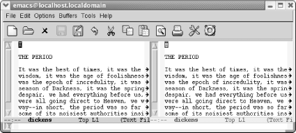
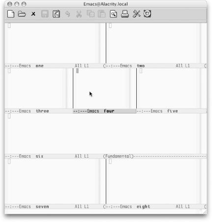
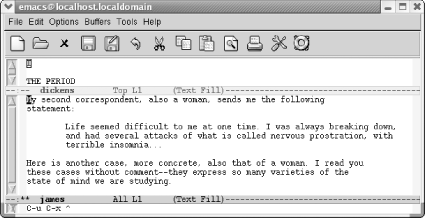

{% include JB/setup %}
{% raw %}
<div>
<div class="book" xml:lang="en"><div class="book"><div class="book"><div class="book"><h1 class="title"><a id="gnu3-CHP-4-SECT-6" class="calibre1"></a>More About Windows</h1></div></div></div><p class="copyright">Depending on your requirements, you may want to work with
side-by-side windows in addition to or instead of horizontal windows.
For finer control, you may want to know how to size windows (and
because they're not GUI windows, you
can't do that with the mouse).<sup class="calibre6">[<a id="gnu3-CHP-4-FNOTE-2" href="#ftn.gnu3-CHP-4-FNOTE-2" class="calibre2">2</a>]</sup> You may also want to
know how to compare files between windows, a good feature for basic
file comparison.</p><div class="book" xml:lang="en"><div class="book"><div class="book"><div class="book"><h2 class="title1"><a id="gnu3-CHP-4-SECT-6.1" class="calibre1"></a>Creating Vertical or Side-by-Side Windows</h2></div></div></div><p class="copyright">To split the window
<a id="gnu3-CHP-4-ITERM-2083" class="calibre2"></a>
               <a id="gnu3-CHP-4-ITERM-2084" class="calibre2"></a>
               <a id="gnu3-CHP-4-ITERM-2085" class="calibre2"></a>
               <a id="gnu3-CHP-4-ITERM-2086" class="calibre2"></a>vertically into two side-by-side
windows, type <span><strong class="calibre5">C-x 3</strong></span>. You can execute
this step repeatedly to create more side-by-side windows.</p><div class="book"><a id="ch04-17-fm2xml" class="calibre2"></a><table class="calibre8"><colgroup class="calibre9"><col class="calibre10"/></colgroup><tbody class="calibre15"><tr class="calibre12"><td class="calibre17">
                           <p class="copyright">Type: <span><strong class="calibre5">C-x 3</strong></span>
                           </p>
                        </td></tr><tr class="calibre12"><td class="calibre17">
                           <p class="copyright">
                              </p><div class="book"><div class="mediaobject"><a id="I_4_tt128" class="calibre2"></a></div></div><p class="copyright">
                           </p>
                        </td></tr><tr class="calibre12"><td class="calibre19">
                           <p class="copyright">Emacs creates two vertical windows.</p>
                        </td></tr></tbody></table></div><p class="copyright">When you create multiple vertical windows, Emacs usually
<a id="gnu3-CHP-4-ITERM-2087" class="calibre2"></a>
               <a id="gnu3-CHP-4-ITERM-2088" class="calibre2"></a>doesn't
have enough room to display a full line of text. Because vertical
windows don't usually show full lines of text, a
right arrow (on graphical implementations) or a dollar sign (on
terminal-based implementations) at the end of a line tells you the
line is continued.</p><p class="copyright">To see the rest of the line, you need to know how to scroll text to
the left and right. To push the text currently being displayed to the
left (so you can see what's on the right), type
<span><strong class="calibre5">C-x &lt;</strong></span>. Left arrows or dollar
signs are displayed on the left side of the window to indicate that
there is more text to the left. To push the text being displayed to
the right (so you can see what's on the left), type
<span><strong class="calibre5">C-x &gt;</strong></span>. You can use these commands
whenever one of your lines is too wide, which can happen with or
without windows.</p></div><div class="book" xml:lang="en"><div class="book"><div class="book"><div class="book"><h2 class="title1"><a id="gnu3-CHP-4-SECT-6.2" class="calibre1"></a>Navigating Windows</h2></div></div></div><p class="copyright">How do you move between
<a id="gnu3-CHP-4-ITERM-2089" class="calibre2"></a>
               <a id="gnu3-CHP-4-ITERM-2090" class="calibre2"></a>windows?
As we mentioned earlier, <span><strong class="calibre5">C-x o</strong></span> moves
you to the "next" window. But how
does Emacs determine what that is?</p><p class="copyright">The best way to express it is to say that Emacs moves through the
windows in natural reading order, from left to right, then down, and
again from left to right. In <a class="calibre2" href="ch04s06.html#gnu3-CHP-4-FIG-4" title="Figure 4-4. Moving between windows (Mac OS X)">Figure 4-4</a>, buffer
names are numbered to show you how Emacs moves from one window to the
next.</p><div class="figure"><a id="gnu3-CHP-4-FIG-4" class="calibre2"></a><div class="figure-contents"><div class="mediaobject"><a id="I_4_tt129" class="calibre2"></a></div></div><p class="title3"><b class="calibre25">Figure 4-4. Moving between windows (Mac OS X)</b></p></div><br class="book"/><p class="copyright">Alternatively, you can simply select the window you want using the
mouse.</p></div><div class="book" xml:lang="en"><div class="book"><div class="book"><div class="book"><h2 class="title1"><a id="gnu3-CHP-4-SECT-6.3" class="calibre1"></a>Enlarging and Shrinking Windows</h2></div></div></div><p class="copyright">Emacs always splits windows into
<a id="gnu3-CHP-4-ITERM-2091" class="calibre2"></a>
               <a id="gnu3-CHP-4-ITERM-2092" class="calibre2"></a>
               <a id="gnu3-CHP-4-ITERM-2093" class="calibre2"></a>
               <a id="gnu3-CHP-4-ITERM-2094" class="calibre2"></a>
               <a id="gnu3-CHP-4-ITERM-2095" class="calibre2"></a>
               <a id="gnu3-CHP-4-ITERM-2096" class="calibre2"></a>two
equal parts. Such a split is often good enough, but sometimes
it's not, particularly if you become a window
aficionado. When you have four or five or six windows on your screen
at once, controlling each window's size becomes
important. Otherwise, the windows you are most interested in will
eventually become too small, and useful editing is almost impossible
when you can see only five or six lines from a file. If you want to
make the window you're working on taller, type
<span><strong class="calibre5">C-x ^</strong></span>. Emacs lengthens the current
window and makes the one below it smaller, accordingly. To make the
current window wider, type <span><strong class="calibre5">C-x }</strong></span>.
Emacs makes this window wider, at the expense of the one to the right
of it.</p><p class="copyright">To make windows smaller, you can shrink them. To shrink a window
vertically, type <span><strong class="calibre5">M-x shrink-window</strong></span>.
Emacs shrinks the current window by one line and the other windows on
the screen grow accordingly. To shrink a window horizontally, type
<span><strong class="calibre5">C-x {</strong></span>. This command makes the window
one column narrower and enlarges the other windows on the screen
horizontally.</p><p class="copyright">Usually you want to work in larger increments than one line or one
column at a time, however. When you type <span><strong class="calibre5">C-u</strong></span> preceding any of these commands, the
command works in increments of four lines or columns at a time. For
example, with two horizontal windows on the screen,
let's use <span><strong class="calibre5">C-u C-x ^</strong></span>
to enlarge the <code class="calibre21">james</code> window.</p><div class="book"><a id="ch04-19-fm2xml" class="calibre2"></a><table class="calibre8"><colgroup class="calibre9"><col class="calibre10"/></colgroup><tbody class="calibre15"><tr class="calibre12"><td class="calibre17">
                           <p class="copyright">Type: <span><strong class="calibre5">C-u C-x ^</strong></span>
                           </p>
                        </td></tr><tr class="calibre12"><td class="calibre17">
                           <p class="copyright">
                              </p><div class="book"><div class="mediaobject"><a id="I_4_tt130" class="calibre2"></a></div></div><p class="copyright">
                           </p>
                        </td></tr><tr class="calibre12"><td class="calibre19">
                           <p class="copyright">Emacs makes the current window larger.</p>
                        </td></tr></tbody></table></div><p class="copyright">As you would expect, when you make the window larger, it
automatically fills with more text from the buffer. There are
shortcuts to sizing windows as well. If you have a very small
buffer—for example, a one-line buffer containing the
vocabulary-building word for the day and its definition—you can
shrink the window to the size of the buffer by typing <span><strong class="calibre5">C-x -</strong></span> (for <span><strong class="calibre5">shrink-window-if-larger-than-buffer</strong></span>). If the
buffer is larger than the window, this command does nothing. Typing
<span><strong class="calibre5">C-x +</strong></span> (for <span><strong class="calibre5">balance-windows</strong></span>) creates windows of equal size
again. (This latter command is also useful if you have an odd number
of windows; <span><strong class="calibre5">C-x +</strong></span> divides the
display equally among them.)</p></div><div class="book" xml:lang="en"><div class="book"><div class="book"><div class="book"><h2 class="title1"><a id="gnu3-CHP-4-SECT-6.4" class="calibre1"></a>Limits on Window Size</h2></div></div></div><p class="copyright">Windows in Emacs
<a id="gnu3-CHP-4-ITERM-2097" class="calibre2"></a>
               <a id="gnu3-CHP-4-ITERM-2098" class="calibre2"></a>can
be as big as your screen. There's a limit to how
small windows can be, however, and this limit is specified by the
variables <span><strong class="calibre5">window-min-height</strong></span> (whose
default is four lines) and <span><strong class="calibre5">window-min-width</strong></span> (whose default is ten
characters). If you enlarge other windows to the point that their
counterparts become less than ten characters wide or four lines high,
Emacs deletes the smaller windows. You can set these variables to
other values if you want to; more information on setting variables is
found in <a class="calibre2" href="ch10.html" title="Chapter 10. Customizing Emacs">Chapter 10</a>.</p></div><div class="book" xml:lang="en"><div class="book"><div class="book"><div class="book"><h2 class="title1"><a id="gnu3-CHP-4-SECT-6.5" class="calibre1"></a>Comparing Files Between Windows</h2></div></div></div><p class="copyright">Especially if you're looking
<a id="gnu3-CHP-4-ITERM-2099" class="calibre2"></a>
               <a id="gnu3-CHP-4-ITERM-2100" class="calibre2"></a>
               <a id="gnu3-CHP-4-ITERM-2101" class="calibre2"></a>for
minute differences between large files, the <span><strong class="calibre5">compare-windows</strong></span> command comes in handy. To use
<span><strong class="calibre5">compare-windows</strong></span>, you must first have
the buffers you want to compare in two windows, either side by side
or horizontally. Go to the beginning of each buffer, then type
<span><strong class="calibre5">M-x compare-windows</strong></span>. Emacs scrolls
each buffer to the place where the discrepancy is. It places the
point in each buffer at the place of the discrepancy, so using
<span><strong class="calibre5">C-x o</strong></span> to move the cursor between
buffers will show you exactly where the files differ.<sup class="calibre6">[<a id="gnu3-CHP-4-FNOTE-3" href="#ftn.gnu3-CHP-4-FNOTE-3" class="calibre2">3</a>]</sup>
            </p><p class="copyright">Of course, this maneuver finds only the first difference between the
two buffers. Finding the second, third, and so on, is a bit tricky.
The <span><strong class="calibre5">compare-windows</strong></span> command works
only if the point in both buffers is in exactly the same place.
Therefore, you need to move past the discrepancy in both buffers
before you can type <span><strong class="calibre5">M-x
compare-windows</strong></span> again. The Unix <span><strong class="calibre5">diff</strong></span> command provides a more comprehensive
(although somewhat awkward looking) way to find the differences
between two files. Emacs also provides an interface to <span><strong class="calibre5">Ediff</strong></span>, with options on the Compare menu (a
submenu of the Tools menu). Ediff is far more comprehensive; see
<a class="calibre2" href="ch12.html" title="Chapter 12. Version Control">Chapter 12</a> for details.</p><p class="copyright">
               <a class="calibre2" href="ch04s06.html#gnu3-CHP-4-TABLE-4" title="Table 4-4. Window commands">Table 4-4</a> summarizes the window
<a id="gnu3-CHP-4-ITERM-2102" class="calibre2"></a>
               <a id="gnu3-CHP-4-ITERM-2103" class="calibre2"></a>commands
discussed in this chapter.</p><div class="book"><a id="gnu3-CHP-4-TABLE-4" class="calibre2"></a><p class="title2"><b class="calibre25">Table 4-4. Window commands</b></p><div class="table-contents"><table summary="Window commands" class="calibre8"><colgroup class="calibre9"><col class="calibre10"/><col class="calibre10"/><col class="calibre10"/></colgroup><thead class="calibre11"><tr class="calibre12"><th class="calibre26">
                           <p class="copyright">
                              <span><strong class="calibre5">Keystrokes</strong></span>
                           </p>
                        </th><th class="calibre26">
                           <p class="copyright">
                              <span><strong class="calibre5">Command name</strong></span>
                           </p>
                        </th><th class="calibre27">
                           <p class="copyright">
                              <span><strong class="calibre5">Action</strong></span>
                           </p>
                        </th></tr></thead><tbody class="calibre15"><tr class="calibre12"><td class="calibre28">
                           <p class="copyright">
                              <span><strong class="calibre5">C-x 2</strong></span>
                              <span><em class="calibre7">File</em></span>
                              <span>→</span> 
                              <span><em class="calibre7">Split Window</em></span>
                           </p>
                        </td><td class="calibre28">
                           <p class="copyright">
                              <span><strong class="calibre5">split-window-vertically</strong></span>
                           </p>
                        </td><td class="calibre29">
                           <p class="copyright">Divide current window into two windows, one above the other.</p>
                        </td></tr><tr class="calibre12"><td class="calibre28">
                           <p class="copyright">
                              <span><strong class="calibre5">C-x 3</strong></span>
                           </p>
                        </td><td class="calibre28">
                           <p class="copyright">
                              <span><strong class="calibre5">split-window-horizontally</strong></span>
                           </p>
                        </td><td class="calibre29">
                           <p class="copyright">Divide current window into two side-by-side windows.</p>
                        </td></tr><tr class="calibre12"><td class="calibre28">
                           <p class="copyright">
                              <span><strong class="calibre5">C-x &gt;</strong></span>
                           </p>
                        </td><td class="calibre28">
                           <p class="copyright">
                              <span><strong class="calibre5">scroll-right</strong></span>
                           </p>
                        </td><td class="calibre29">
                           <p class="copyright">Scroll the window right.</p>
                        </td></tr><tr class="calibre12"><td class="calibre28">
                           <p class="copyright">
                              <span><strong class="calibre5">C-x &lt;</strong></span>
                           </p>
                        </td><td class="calibre28">
                           <p class="copyright">
                              <span><strong class="calibre5">scroll-left</strong></span>
                           </p>
                        </td><td class="calibre29">
                           <p class="copyright">Scroll the window left.</p>
                        </td></tr><tr class="calibre12"><td class="calibre28">
                           <p class="copyright">
                              <span><strong class="calibre5">C-x o</strong></span>
                           </p>
                        </td><td class="calibre28">
                           <p class="copyright">
                              <span><strong class="calibre5">other-window</strong></span>
                           </p>
                        </td><td class="calibre29">
                           <p class="copyright">Move to the other window; if there are several, move to the next
window (see "Navigating Windows").</p>
                        </td></tr><tr class="calibre12"><td class="calibre28">
                           <p class="copyright">
                              <span><strong class="calibre5">C-x 0</strong></span>
                           </p>
                        </td><td class="calibre28">
                           <p class="copyright">
                              <span><strong class="calibre5">delete-window</strong></span>
                           </p>
                        </td><td class="calibre29">
                           <p class="copyright">Delete the current window.</p>
                        </td></tr><tr class="calibre12"><td class="calibre28">
                           <p class="copyright">
                              <span><strong class="calibre5">C-x 1</strong></span>
                              <span><em class="calibre7">File</em></span>
                              <span>→</span> 
                              <span><em class="calibre7">Unsplit Windows</em></span>
                           </p>
                        </td><td class="calibre28">
                           <p class="copyright">
                              <span><strong class="calibre5">delete-other-windows</strong></span>
                           </p>
                        </td><td class="calibre29">
                           <p class="copyright">Delete all windows but this one.</p>
                        </td></tr><tr class="calibre12"><td class="calibre28">
                           <p class="copyright">(<span><em class="calibre7">none</em></span>)</p>
                        </td><td class="calibre28">
                           <p class="copyright">
                              <span><strong class="calibre5">delete-windows-on</strong></span>
                           </p>
                        </td><td class="calibre29">
                           <p class="copyright">Delete all windows on a given buffer.</p>
                        </td></tr><tr class="calibre12"><td class="calibre28">
                           <p class="copyright">
                              <span><strong class="calibre5">C-x ^</strong></span>
                           </p>
                        </td><td class="calibre28">
                           <p class="copyright">
                              <span><strong class="calibre5">enlarge-window</strong></span>
                           </p>
                        </td><td class="calibre29">
                           <p class="copyright">Make window taller.</p>
                        </td></tr><tr class="calibre12"><td class="calibre28">
                           <p class="copyright">(<span><em class="calibre7">none</em></span>)</p>
                        </td><td class="calibre28">
                           <p class="copyright">
                              <span><strong class="calibre5">shrink-window</strong></span>
                           </p>
                        </td><td class="calibre29">
                           <p class="copyright">Make window shorter.</p>
                        </td></tr><tr class="calibre12"><td class="calibre28">
                           <p class="copyright">
                              <span><strong class="calibre5">C-x }</strong></span>
                           </p>
                        </td><td class="calibre28">
                           <p class="copyright">
                              <span><strong class="calibre5">enlarge-window-horizontally</strong></span>
                           </p>
                        </td><td class="calibre29">
                           <p class="copyright">Make window wider.</p>
                        </td></tr><tr class="calibre12"><td class="calibre28">
                           <p class="copyright">
                              <span><strong class="calibre5">C-x {</strong></span>
                           </p>
                        </td><td class="calibre28">
                           <p class="copyright">
                              <span><strong class="calibre5">shrink-window-horizontally</strong></span>
                           </p>
                        </td><td class="calibre29">
                           <p class="copyright">Make window narrower.</p>
                        </td></tr><tr class="calibre12"><td class="calibre28">
                           <p class="copyright">
                              <span><strong class="calibre5">C-x -</strong></span>
                           </p>
                        </td><td class="calibre28">
                           <p class="copyright">
                              <span><strong class="calibre5">shrink-window-if-larger-than-buffer</strong></span>
                           </p>
                        </td><td class="calibre29">
                           <p class="copyright">Make window smaller if buffer is smaller than window.</p>
                        </td></tr><tr class="calibre12"><td class="calibre28">
                           <p class="copyright">
                              <span><strong class="calibre5">C-x +</strong></span>
                           </p>
                        </td><td class="calibre28">
                           <p class="copyright">
                              <span><strong class="calibre5">balance-windows</strong></span>
                           </p>
                        </td><td class="calibre29">
                           <p class="copyright">Make windows the same size.</p>
                        </td></tr><tr class="calibre12"><td class="calibre28">
                           <p class="copyright">
                              <span><strong class="calibre5">C-M-v</strong></span>
                           </p>
                        </td><td class="calibre28">
                           <p class="copyright">
                              <span><strong class="calibre5">scroll-other-window</strong></span>
                           </p>
                        </td><td class="calibre29">
                           <p class="copyright">Scroll other window.</p>
                        </td></tr><tr class="calibre12"><td class="calibre28">
                           <p class="copyright">
                              <span><strong class="calibre5">C-x 4 f</strong></span>
                           </p>
                        </td><td class="calibre28">
                           <p class="copyright">
                              <span><strong class="calibre5">find-file-other-window</strong></span>
                           </p>
                        </td><td class="calibre29">
                           <p class="copyright">Find a file in the other window.</p>
                        </td></tr><tr class="calibre12"><td class="calibre28">
                           <p class="copyright">
                              <span><strong class="calibre5">C-x 4 b</strong></span>
                           </p>
                        </td><td class="calibre28">
                           <p class="copyright">
                              <span><strong class="calibre5">switch-to-buffer-other-window</strong></span>
                           </p>
                        </td><td class="calibre29">
                           <p class="copyright">Select a buffer in the other window.</p>
                        </td></tr><tr class="calibre12"><td class="calibre30">
                           <p class="copyright">(<span><em class="calibre7">none</em></span>)<span><em class="calibre7">Tools</em></span> 
                              <span>→</span>
                              <span><em class="calibre7">Compare (Ediff)</em></span> 
                              <span>→</span> 
                              <span><em class="calibre7">This Window
and Next Window</em></span>
                           </p>
                        </td><td class="calibre30">
                           <p class="copyright">
                              <span><strong class="calibre5">compare-windows</strong></span>
                           </p>
                        </td><td class="calibre31">
                           <p class="copyright">Compare this window with the next window and show the first
difference.</p>
                        </td></tr></tbody></table></div></div><br class="book"/></div><div class="book"><br class="book"/><hr class="calibre4"/><div class="book"><p class="copyright"><sup class="calibre6">[<a id="ftn.gnu3-CHP-4-FNOTE-2" href="#gnu3-CHP-4-FNOTE-2" class="calibre2">2</a>] </sup>It's true that you can't
resize Emacs windows using the mouse. But if you resize an Emacs
frame, it does impact the size of the windows, even eliminating
windows at times if the frame cannot display all the windows. Of
course, as always, eliminating a window doesn't
impact the underlying buffer.</p></div><div class="book"><p class="copyright"><sup class="calibre6">[<a id="ftn.gnu3-CHP-4-FNOTE-3" href="#gnu3-CHP-4-FNOTE-3" class="calibre2">3</a>] </sup>You can have more than two windows on the screen, but only two
are compared: the one the cursor is in and the next window (remember
that the next window is either to the right or down if there is no
window to the right).</p></div></div></div></div>

{% endraw %}

